☆贊助方案A：可獲得「ACADAdviser外掛程式」，擁有「外掛討論區」。
☆專屬方案B：可獲得「論壇大補帖及教學光碟」，擁有「專屬討論區」。
※基本瀏覽閱讀版區權限一樣，但是贊助方案A無法閱讀「專屬討論區」及「專屬資源區」。
👇完整外掛說明
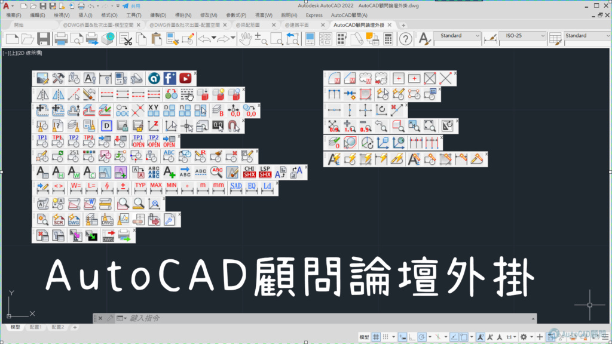
1.期限:1年份 NT4,000元(優惠一年轉移授權服務)。(使用 PayPal付費方式:NT4,240元)
2.會員頭銜成為 贊助會員(勳章一枚)。
3.可以閱讀所有論壇版區。
4.可以下載所有資源文件。
5.觀看影音教學(記得開喇叭)。
6.可獲得「ACADAdviser外掛程式」。詳全文...(點我)
7.擁有外掛討論區(外掛討論)。
8.獨享後續更多論壇福利。
👉【加入贊助A付費(點我) 】👈
1.期限:1年份 NT1,500元。(使用 PayPal付費方式:NT1,590元)
2.會員頭銜成為 專屬會員(勳章一枚)。
3.可以閱讀所有論壇版區。
4.可以下載所有資源文件。
5.擁有專屬討論區(線上家教,不含lsp程式討論教學)。
6.享有專題影片式解答幫助。
7.觀看影音教學(記得開喇叭)。
8.教學光碟(107支影片)。詳全文...(點我)
9.AutoCAD顧問論壇大補帖(49支影音影片)。詳全文...(點我)
10.觀看線上課程[專屬分享]AutoCAD 2D+3D入門(2010版)...(點我)
11.顧問經典問與答（PDF線上版）隨時觀看有效解決職場疑難雜症。
12.獨享後續更多論壇福利。
👉【加入贊助B付費(點我) 】👈
服務契約期限內我們提供以下服務：
一、解決方案：功能運用及技術問題討論
專屬討論版區: https://www.autocad-tw.com/f1-forum
二、教育訓練：影片教學及技術文件下載
專屬資源版區: https://www.autocad-tw.com/f35-forum
1.即日起加入專屬會員一方案(含續約用戶)，可以得到教學光碟（僅適用微軟作業系統），總共107支影片(部分無聲格式，其中AutoCAD 2022的新功能影片為有聲音格式)，會員觀看時有任何疑問可以提出來討論，我會再補充文字說明。
PS:加入成功後請發送短信(e-mail)給我，內文中註明您的GMAIL信箱，方便綁定專屬資源下載。
聯絡信箱： kv1012tiger.kc@gmail.com
新增線上課程[專屬分享]AutoCAD 2D+3D入門(2010版)...(點我)
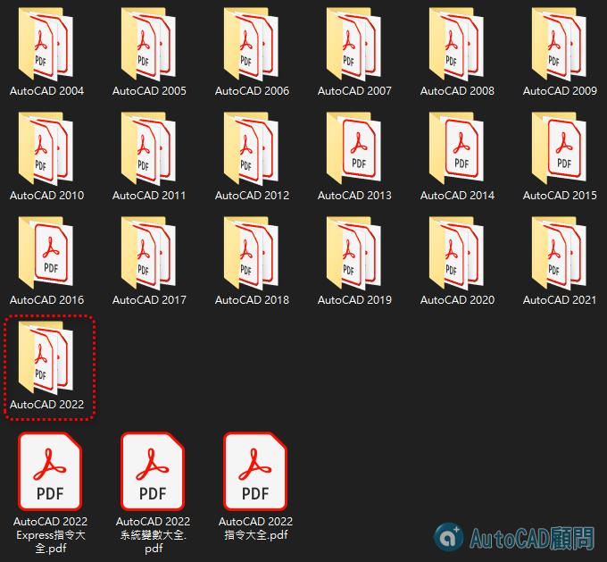
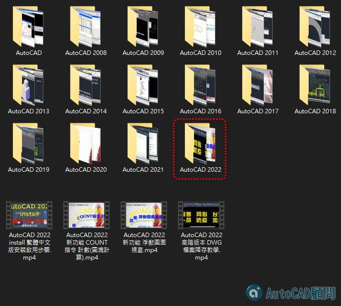
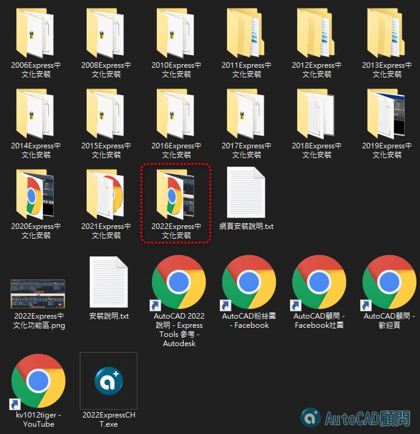
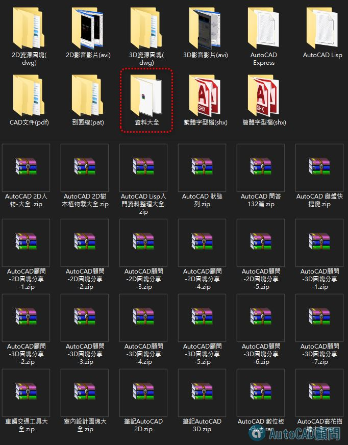
代碼:
[AutoCAD 2022]資料夾(影片):
AutoCAD 2022 install 繁體中文版安裝啟用步驟
AutoCAD 2022 新功能 COUNT指令 計數(圖塊計算)
AutoCAD 2022 新功能 浮動圖面視窗
AutoCAD 2022高階版本 DWG檔案降存教學
[AutoCAD 2021]資料夾(影片):
AutoCAD 2021 新功能概述
AutoCAD 2021新功能說明-01
AutoCAD 2021新功能說明-02_ DWG檔案歷程
[AutoCAD 2020]資料夾(影片):
AutoCAD 2020 COMPARE圖面比較-增強
AutoCAD 2020 INSERT圖塊選項板
AutoCAD 2020 MEASUREGEOM快速測量
AutoCAD 2020 PURGE清除-增強
AutoCAD 2020 新功能-圖面比較 COMPARE
AutoCAD 2020 新增AutoCAD典型工作區
[AutoCAD 2019]資料夾(影片):
AutoCAD 2019 新功能概述
AutoCAD 2019 新增AutoCAD 典型工作區-手動
AutoCAD 2019 導覽使用者介面
[AutoCAD 2018]資料夾(影片):
AutoCAD 2018 新功能概述
[AutoCAD 2017]資料夾(影片):
AutoCAD 2017 新功能概述
AutoCAD 2017 新增「AutoCAD 典型」工作區-手動自訂步驟
[AutoCAD 2016]資料夾(影片):
AutoCAD 2016 文字框及幾何中心點-2D新功能
AutoCAD 2016 修訂雲形線-2D新功能
AutoCAD 2016 智慧標註-2D新功能
AutoCAD 2016 新增「AutoCAD 典型」工作區
AutoCAD 2016 預覽顯示效果-2D新功能
[AutoCAD 2015]資料夾(影片):
AutoCAD 2015 3D環轉檢視目標點-3D新功能
AutoCAD 2015 拖曳套索-2D新功能
AutoCAD 2015 指令預覽-2D新功能
AutoCAD 2015 視埠控制增強-2D新功能
AutoCAD 2015 複合線型預覽-2D新功能
[AutoCAD 2014]資料夾(影片):
AutoCAD 2014 指令行增強 - 自動完成
AutoCAD 2014 自訂別名增強 - 編輯PGP檔
AutoCAD 2014 檔案頁籤 FILETAB
[AutoCAD 2013]資料夾(影片):
AutoCAD 2013 Annotation Monitoring 註解監控
AutoCAD 2013 Associative Arrays 關聯陣列增強
AutoCAD 2013 Autodesk Inventor 模型匯入
AutoCAD 2013 Command Line 指令行
AutoCAD 2013 Drawing Tabs 視窗切換
AutoCAD 2013 Interface Enhancements 界面增強
AutoCAD 2013 Introduction 介紹
AutoCAD 2013 Model Documentation 模型文檔
AutoCAD 2013 Property Preview 屬性預覽
AutoCAD 2013 Section Views 剖面視圖
[AutoCAD 2012]資料夾(影片):
2D新功能 圓角及倒角(預覽)
2D新功能 多功能掣點
2D新功能 混成曲線及接合
2D新功能 環形陣列
2D新功能 矩形陣列
2D新功能 群組
2D新功能 自動完成指令行
2D新功能 複製(陣列)
2D新功能 視窗選取
2D新功能 路徑陣列
3D新功能 UCS掣點控制
3D新功能 VIEWBASE 基礎視圖
3D新功能 VPCONTROL視埠控制
3D新功能 三維關聯陣列
3D新功能 指令增強
[AutoCAD 2011]資料夾(影片):
新功能-圓角及倒角邊緣
新功能-填充線
新功能-實體即時編修
新功能-循環選取
新功能-物件隔離
新功能-界面說明
新功能-透明度
[AutoCAD 2010]資料夾(影片):
功能區
匯出PDF
參數式製圖(展示)
參數式製圖
增強的動態圖塊
工作區
快速存取工具列
應用程式功能表
按鍵提示
貼附PDF
[AutoCAD 2009]資料夾(影片):
Bonus Pack 1-反轉
Bonus Pack 1-清除
Bonus Pack 1-測量
Bonus Pack 1-視埠旋轉
Bonus Pack 1-雲形線
Bonus Pack 2-貼附 PDF
功能區
功能表瀏覽器
工作區
[AutoCAD 2008]資料夾(影片):
圖層顯示的增強功能
多行文字的增強功能
引線的增強功能
標註的增強功能
自動註解比例調整的增強功能
表格增強功能與資料連結的增強功能
[AutoCAD]資料夾(影片):
出圖型式線寬(筆寬)-1
出圖型式線寬(筆寬)-2
功能變數
動態圖塊
圖紙集-功能變數(屬性定義)-3.
圖紙集-功能變數(更名與重新編號)
圖紙集-功能變數(總張數)-2
圖紙集-圖紙清單
圖紙集-新建
外部參考-參考管理員
外部參考-專案路徑PROJECTNAME
字體對映檔(FMP)
工具選項板TOOLPALETTES
指令別名(PGP)
樣板檔(DWT)
發佈PUBLISH
電子傳送ETRANSMIT
頁面設定PAGESETUP
現在加入「專屬會員」，還可獨享"論壇大補帖"，內含49支影音影片喔（僅適用微軟作業系統）！
請大家將這個好消息告訴有需要的朋友喔～
註：詳細說明請參考贊助會員專區(點我)
★AutoCAD顧問論壇大補帖，內容共有11個資料夾：
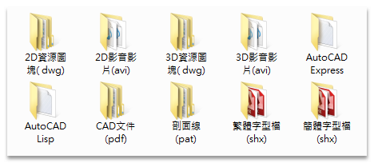
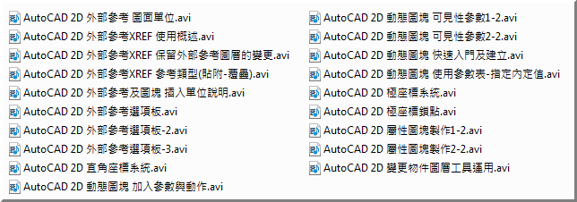
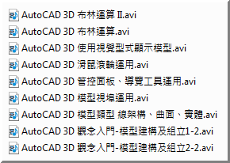
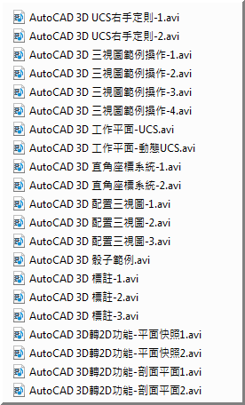
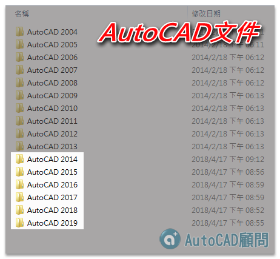
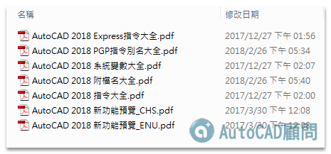
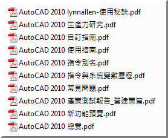
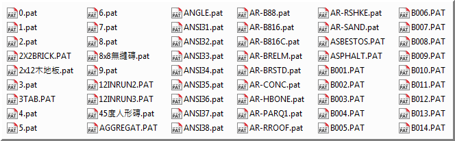
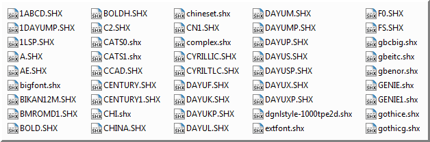
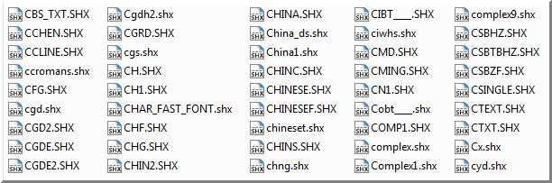
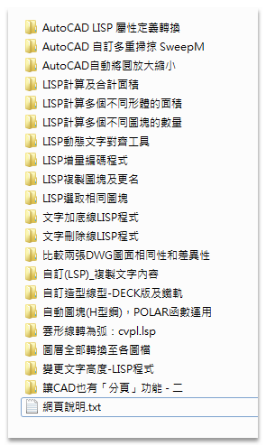
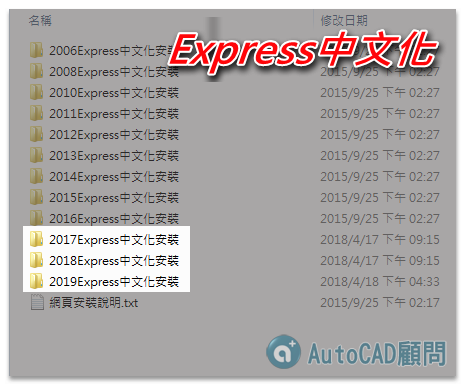
代碼:
AutoCAD 2D人物-大全 .zip
AutoCAD 2D樹木植物栽大全.zip
AutoCAD Lisp入門資料整理大全.zip
AutoCAD 問答132篇.zip
AutoCAD 數位板-dwg.rar
AutoCAD 狀態列.zip
AutoCAD 鍵盤快捷鍵.zip
AutoCAD窗花描繪大全.rar
AutoCAD顧問-2D圖塊分享-1.zip
AutoCAD顧問-2D圖塊分享-2.zip
AutoCAD顧問-2D圖塊分享-3.zip
AutoCAD顧問-2D圖塊分享-4.zip
AutoCAD顧問-2D圖塊分享-5.zip
AutoCAD顧問-3D圖塊分享-1.zip
AutoCAD顧問-3D圖塊分享-2.zip
AutoCAD顧問-3D圖塊分享-3.zip
AutoCAD顧問-3D圖塊分享-4.zip
AutoCAD顧問-3D圖塊分享-5.zip
AutoCAD顧問-3D圖塊分享-6.zip
AutoCAD顧問-3D圖塊分享-7.zip
室內設計圖塊大全.zip
工程車機械大全.zip
指北針大全.zip
筆記AutoCAD 2D.zip
筆記AutoCAD 3D.zip
車輛交通工具大全.zip
PS:加入成功後請發信(Gmail)給我們，內文中註明您的Gmail，再提供您線上下載網址。
聯絡信箱： kv1012tiger.kc@gmail.com